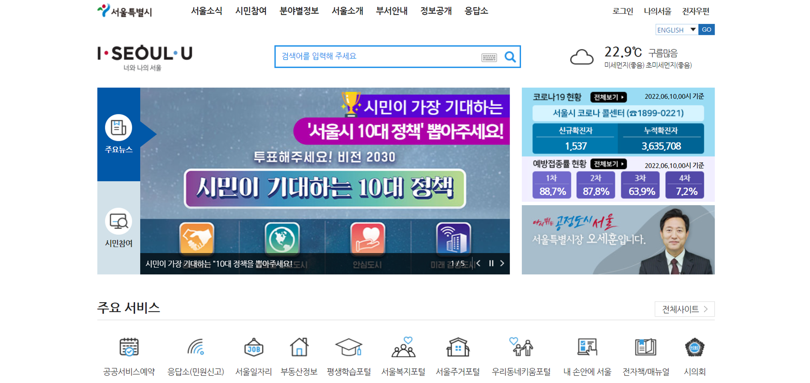
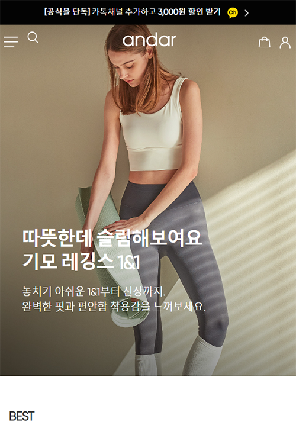
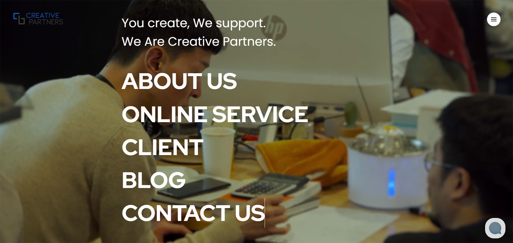
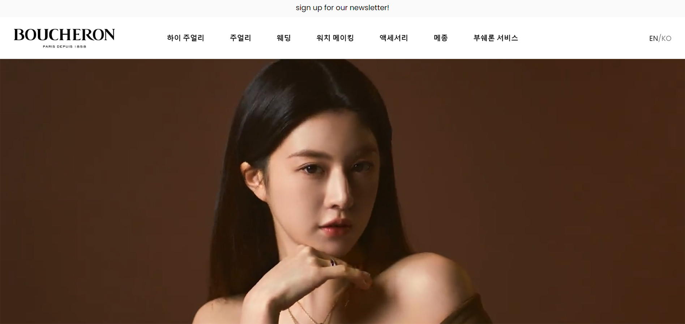
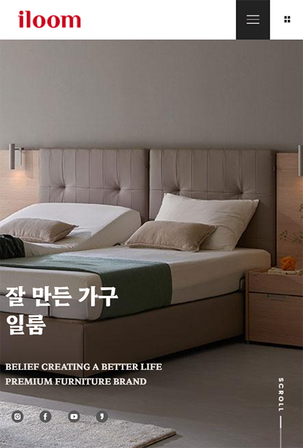

About me
감각적이고 창의적인 퍼블리셔
퍼블리싱을 좋아하는 저는 정체되어있지 않고 더 발전하기 위해 항상 노력하고 있습니다.
새로운 기술과 새로운 방식에 관심이 많고 보다 특별하고 안정적인 마크업을 하기 위해 노력합니다.
소통을 좋아하는 퍼블리셔
평소 프로젝트나 업무를 수행할때 소통의 중요성을 인지하고 있습니다.
항상 배움의 입장을 잊지않고 소통하려는 노력을 하겠습니다.
이름:류다영
생년월일:1992년 10월 30일
동국대학교 경주캠퍼스 호텔컨벤션 경영학 졸업
2021 04 .05 ~ 2021 08 .10 [디지털디자인] UX/UI 디자인 (웹디자인/웹퍼블리셔)전문가 과정
skills
-
html
-
css
-
jquery
-
photoshop
-
illustrator
-
01.Seoul cityhall
-
02.Andar
-
03.Creative partners
-
04.Boucheron
-
05.Iloom
Works
제가 작업한 작업물들을 좀 더 자세히 소개할게요
-
서울시청(포트폴리오용)
기존 서울시청 PC 페이지의 카피 사이트를 제작해 보았습니다. 관공서 홈페이지라는 특성에 따라 웹 접근성에 중점을 두고 작업하였습니다.
Point : 관공서 홈페이지 PC페이지참여도 : 100%Publishing안다르(포트폴리오용)
기존 안다르의 모바일 페이지의 카피 사이트를 제작해 보았습니다. 기존 사이트의 몇가지의 요소들을 변경하여 제작하였으며, 모바일 페이지라는 특성에 따라 다양한 모바일 기기에 적용이 가능한 사이트를 제작하였습니다.
Point : 모바일 페이지참여도 : 100%Publishing크리에이티브 파트너스(포트폴리오용)
기존 크리에이티브 파트너스의 PC 페이지의 카피 사이트를 제작해 보았습니다. 카피 사이트를 제작하며 반응형 사이트로 제작해 보였으며, 기존 밋밋해 보일수 있는 사이트를 좀 더 동적인 무브먼트를 가미하여 제작하였습니다.
Point : 반응형 페이지참여도 : 100%Publishing부쉐론(포트폴리오용)
명품 브랜드 부쉐론의 PC페이지를 디자인 및 제작해 보았습니다. 기존의 사이트 보다 좀 더 브랜드의 아이덴티티와 트렌디함을 살리는 것을 초점으로 디자인을 진행하였으며, 동적인 무브먼트를 가미하여 좀 더 재미있게 사이트를 경험할 수 있도록 제작 하였습니다.
Point : PC 페이지 디자인참여도 : 100%Design & Publishing일룸(포트폴리오용)
가구 브랜드 일룸의 모바일 페이지를 디자인 및 제작해 보았습니다. 판매를 목적으로 하는 일룸의 기존의 사이트 보다 좀 더 브랜드의 아이덴티티와 정보전달을 목적으로한 사이트로 제작하였습니다. 동적인 무브먼트를 가미하여 좀 더 재미있게 사이트를 경험할 수 있도록 제작 하였습니다.
Point : 모바일 페이지 디자인참여도 : 100%Design & Publishing